Macro Dashboards
Every chart recreated independently from live official data (FRED, EIA, NOAA, World Bank, IMF), mapped back to the BCA Research reports they came from. Regenerated daily. Page generated: Aug 29, 2026 1:55 PM ET.
US economy Markets Bonds & credit FX & gold Commodities FX extended Cross-asset US fiscal
1 · US economy CPI, wages & shelter, claims, JOLTS, savings/PCE, NFCI, housing starts, Case-Shiller, current account
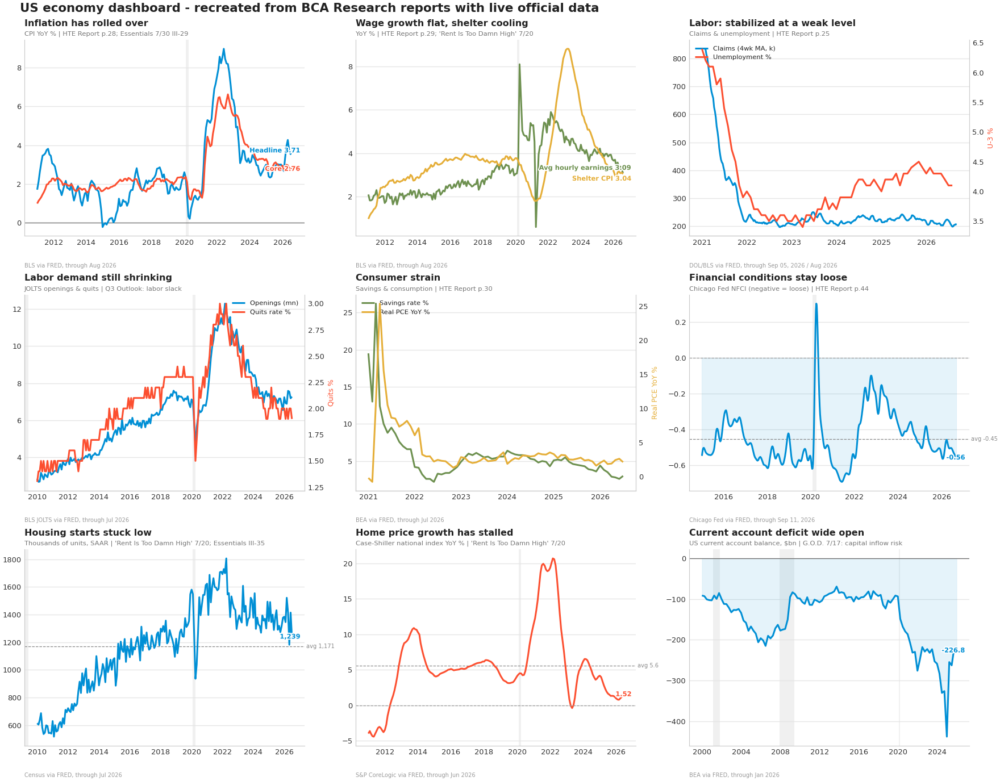
2 · Markets S&P 500 + 200d, trend deviation (2-sigma), real equities, Nasdaq, Nikkei, Japan/US, VIX, Bitcoin, MMF cash
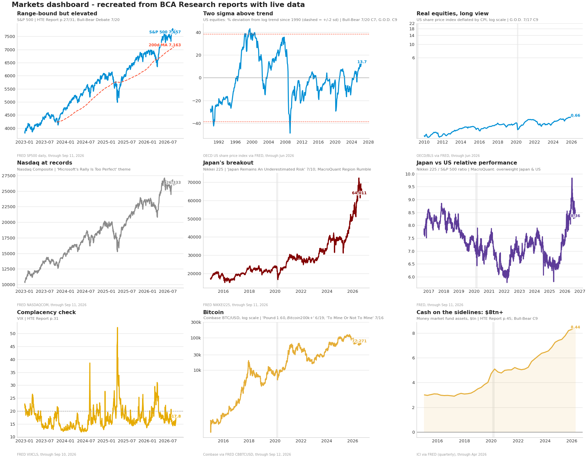
3 · Bonds & credit 10Y decomposed, 2/10/30 levels, curves, IG/HY spreads, global 10Y, 30Y mortgage
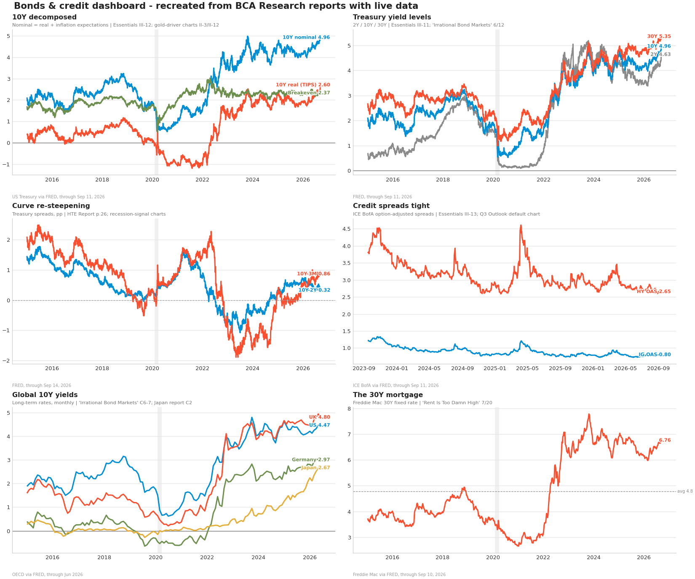
4 · FX & gold Broad dollar, EUR, USD/JPY since 1971, cable, USD/CNY, gold & silver
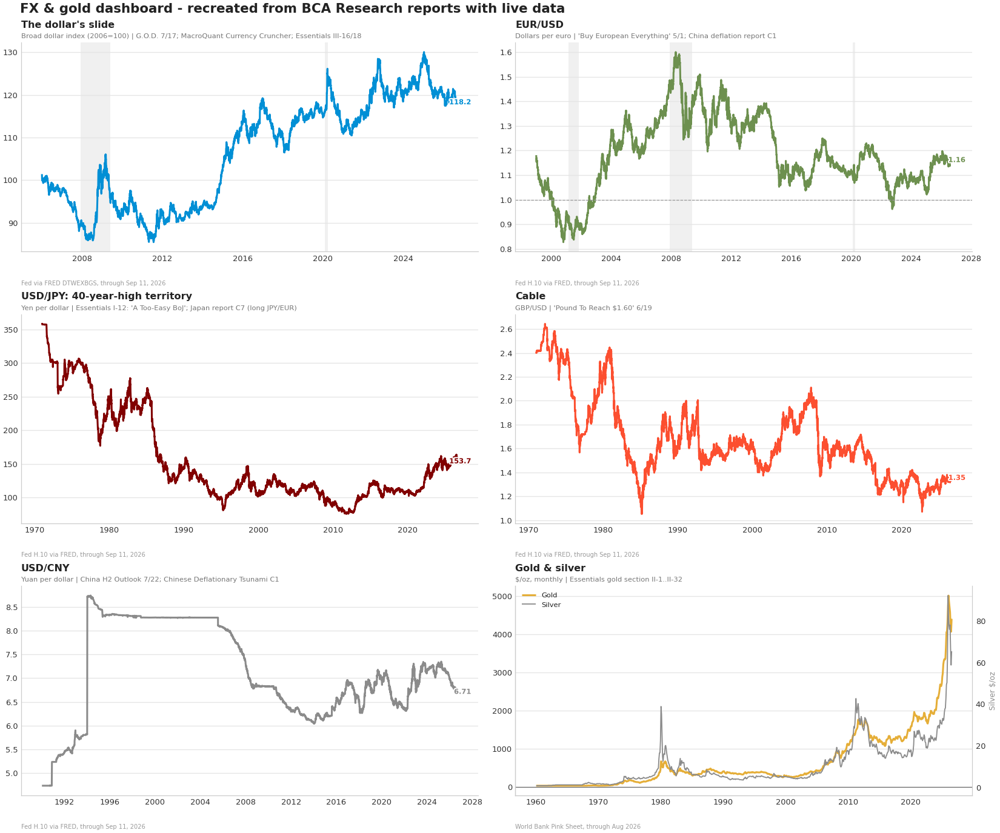
5 · Commodities & geopolitics Brent, WTI, SPR, Henry Hub, European gas, pump gasoline, ONI, softs, US shale
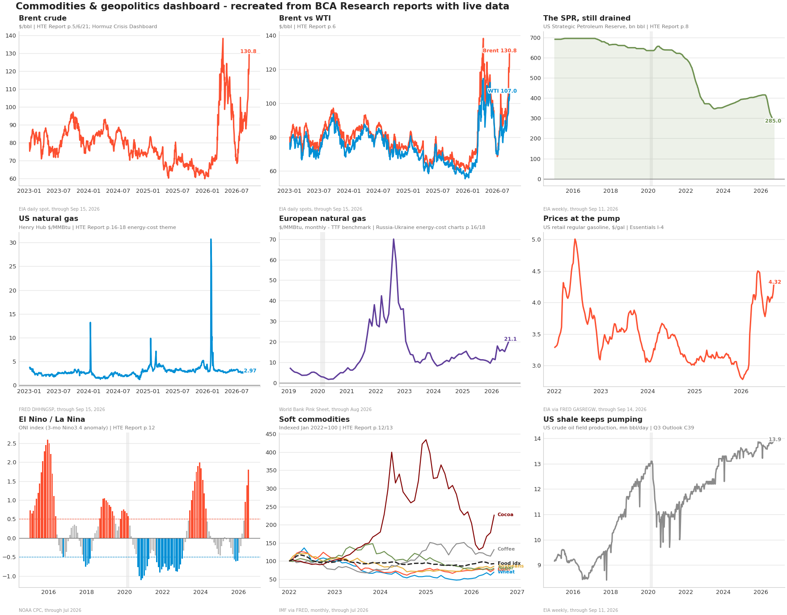
6 · FX extended AUD, CAD, CHF, MXN, BRL, KRW - FES back-catalog themes
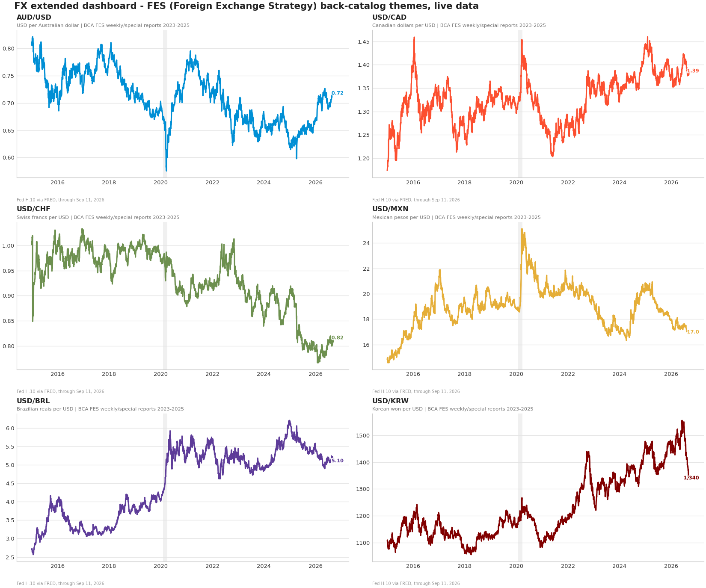
7 · Cross-asset classics All-commodities index, copper, copper/gold, gold/oil, platinum & silver, HY spreads vs VIX
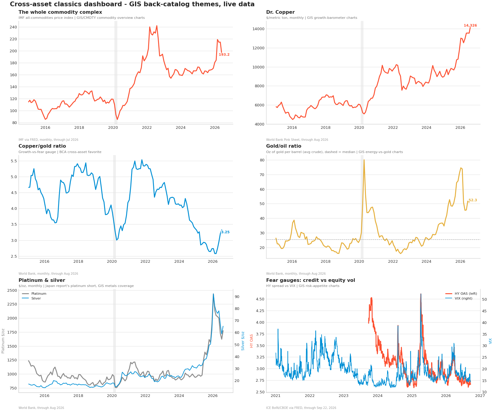
8 · US fiscal 12-month federal deficit, total public debt, net interest as % of GDP
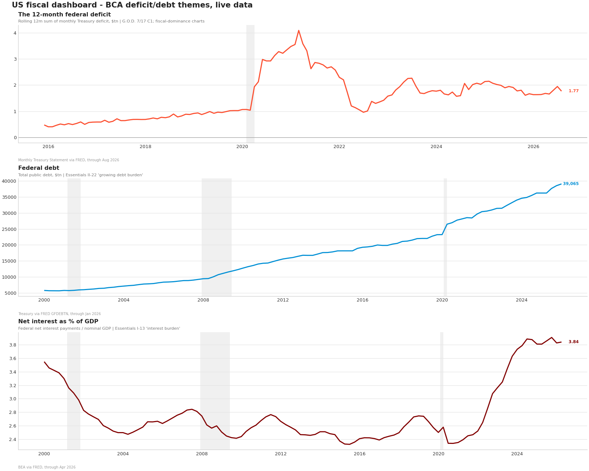
9 · Central banks Fed/ECB/BoE/BoJ policy rates, real Fed funds, Fed/ECB/BoJ balance sheets, reserves, 5y5y breakevens, M2, US inflation (headline/core/PCE), inflation across majors, real policy rates US/EA/UK
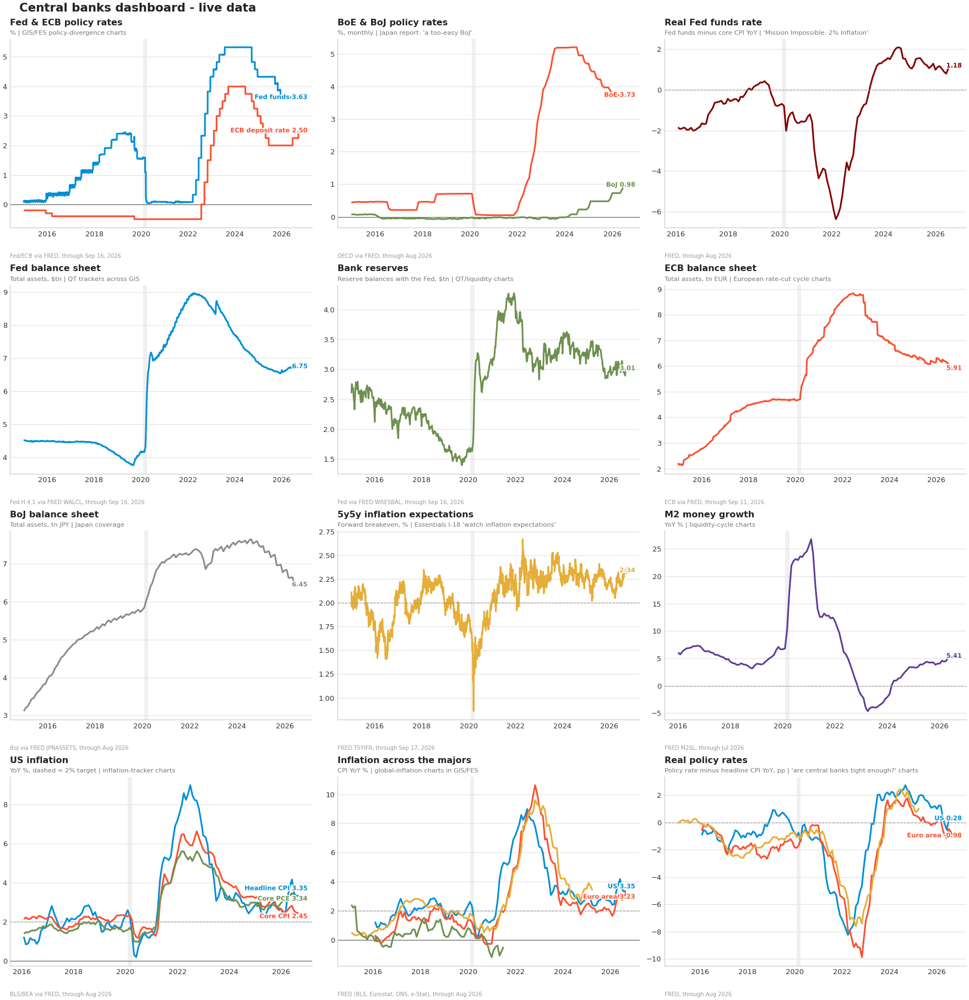
10 · US macro extended Industrial production, retail sales, sentiment, CFNAI, permits, durables, weekly economic index, payrolls
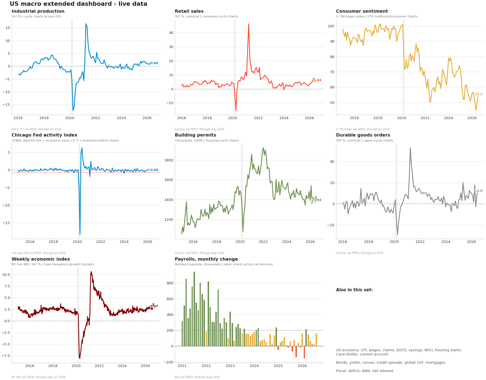
11 · Sigma moves Cross-asset 1d/5d/30d moves in standard deviations, move table, rolling sigma history, realized vs implied vol, rates vol
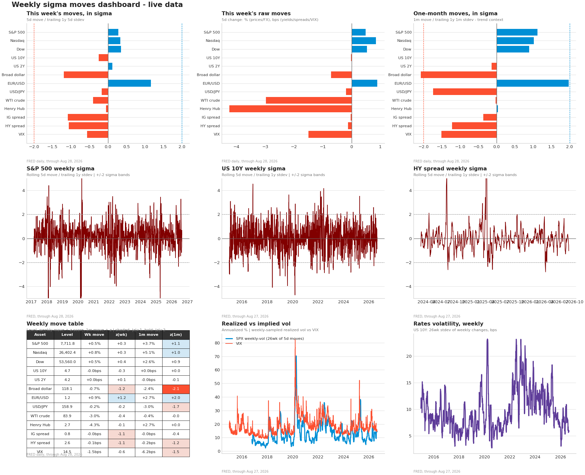
12 · Fed watch Next-FOMC target-rate probabilities, market-implied policy path (Atlanta Fed MPT / CME SOFR options), EFFR vs 2Y, 2Y minus fed funds
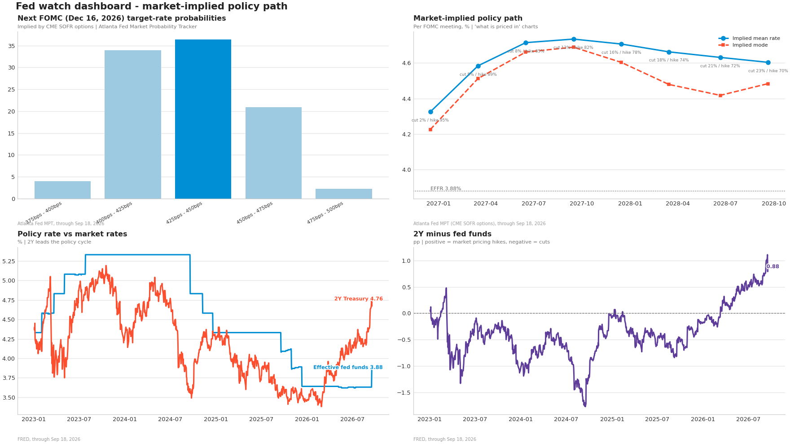
84 panels across 12 dashboards. Sources and data-through dates are annotated on each panel. Charts marked with their source report and page. Not affiliated with BCA Research; recreations from public data.